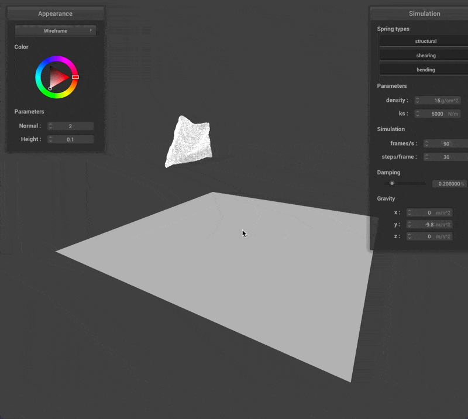

Table of Contents
Task 1: Masses and Springs
Task 2: Simulation via Numerical Integration
Task 3: Handling Collision with other Objects
Task 4: Self Collisions
Task 5: Shaders
Introduction
This project was about implementing a simple cloth renderer that could simulate a cloth that can handle:
- Pinned points in the cloth
- Collision with planes and spheres
- Collision with itself
- Shaders We used a point-mass and spring model to simulate the cloth, and we used verlet integration to implement the physics behind the cloth. To handle intersections with objects, we used a simple model where objects would displace the cloth as directly as possible outside of its geometry. We also used a spatial map to speed up the self-intersection algorithm from $O(n^2)$ to approximately linear time. In addition, we wrote shaders in GLSL to render diffuse lighting, Blinn-Phong lighting, texture mapping, bump and displacement mapping, and mirror shading.
Debugging woes
Overall, this project went smoothly with little debugging needed, besides a few hiccups that were fairly easy to debug. The funniest bug we had is shown below, where our self-collision was a bit overzealous and propelled our cloth on a journey to the positive $xz$ direction.

Reflection
This project was very fun to implement, and getting to learn a bit of GLSL along the way was a great experience. I (Andrew) found this project to be a nice break from the difficulty of the ray-tracing project, and being able to see our implementation run in real time compared to the ray-tracer was the best part. It was so satisfying to see our code just work in real time.